سرگرمی:
پرندوں کا گھونسلہ بنائیں
خلاصہ:
تعارف:
مختلف قسم کے پرندے مختلف جگہوں پر اپنے انڈے دیتے ہیں۔ کچھ جھاڑیوں میں چھوٹے گھونسلے بناتے ہیں، کچھ لمبے درختوں میں بہت بڑے گھونسلے بناتے ہیں۔ کچھ اپنے انڈے براہ راست زمین پر یا پتھریلی کناروں پر دیتے ہیں۔ جو لوگ گھونسلے بناتے ہیں وہ بہت سے مختلف قسم کے مواد استعمال کرتے ہیں۔ اس پروجیکٹ میں آپ اپنے پرندوں کا گھونسلہ بنانے کی کوشش کریں گے صرف قدرتی مواد کا استعمال کرتے ہوئے جو آپ باہر تلاش کرسکتے ہیں۔ کیا تم پرندے سے بہتر کر سکتے ہو؟
مواد:
- انڈے یا چھوٹی چٹانیں جن کا آپ دکھاوا کر سکتے ہیں انڈے ہیں۔
- مختلف قدرتی مواد جو آپ کو باہر ملتے ہیں جیسے کہ ٹہنیاں، گھاس، پتے، مٹی، چٹانیں، ریت وغیرہ۔ آپ کے پاس دستیاب مواد اس بات پر منحصر ہوگا کہ آپ کہاں رہتے ہیں۔
- مواد جمع کرنے کے لیے بالٹی یا دوسرا کنٹینر
تیاری کا کام:
یہ سرگرمی گندا ہو سکتی ہے۔ اگر ممکن ہو تو اپنے کام باہر کریں۔ اگر آپ اندر کام کر رہے ہیں تو صفائی کو آسان بنانے کے لیے ٹرے پر اپنا گھونسلا بنائیں۔
طریقہ کار
- سب سے پہلے، یہ دیکھنے کے لیے باہر جائیں کہ آیا آپ کو آس پاس پرندوں کا کوئی گھونسلہ ملتا ہے۔ اگر آپ کو کوئی مل جاتا ہے تو اسے دور سے غور سے دیکھیں — زیادہ قریب نہ جائیں اور گھونسلے بنانے والے پرندوں کو پریشان نہ کریں! کیا آپ بتا سکتے ہیں کہ گھونسلہ کن مواد سے بنا ہے؟
- اگر آپ کو باہر پرندوں کا کوئی گھونسلہ نہیں ملتا ہے تو آن لائن پرندوں کے گھونسلوں کی تصویریں تلاش کریں۔ آپ کو کتنے مختلف قسم کے گھونسلے مل سکتے ہیں؟ گھونسلے کس چیز سے بنے ہیں؟
- اب، اپنے ارد گرد ایسے مواد کو تلاش کریں جو آپ آسانی سے اٹھا سکتے ہیں، جیسے ٹہنیاں اور پتھر۔ ان مقاصد کے بارے میں سوچیں جو مختلف مواد کو پورا کر سکتے ہیں۔
آپ کے خیال میں کون سا مواد اچھا گھونسلہ بنائے گا؟ کیا ان میں سے کوئی ان گھونسلوں سے میل کھاتا ہے جو آپ نے ذاتی طور پر یا آن لائن دیکھا ہے؟
- مواد کا ایک گچھا جمع کرنے کے لیے اپنی بالٹی کا استعمال کریں۔ نوٹ کریں کہ بالٹی آپ کے لیے ایک آسان وقت بچانے والا ہے، لیکن پرندوں کے پاس یہ عیش و آرام نہیں ہے۔ انہیں آگے پیچھے کئی دورے کرنے پڑتے ہیں، اکثر ایک وقت میں ایک ٹہنی لے کر جاتے ہیں!
- اب، ایک گھونسلہ بنانے کے لیے اپنے مواد کا استعمال کریں جو کم از کم ایک انڈے کو محفوظ طریقے سے رکھنے کے قابل ہو۔ یہ ایک کھلا ختم ہونے والا عمل ہے — اس پر عمل کرنے کے لیے کوئی واحد "درست" طریقہ کار نہیں ہے۔
- اپنے گھونسلے کو "ٹیسٹ" کریں (پہلے آہستہ سے!) کیا آپ اس پر پھونک مار سکتے ہیں (یا اس پر پنکھے کا نشانہ بنا سکتے ہیں)، اسے اٹھا سکتے ہیں، یا اس کے اندر انڈا رکھ سکتے ہیں؟ کیا گھونسلا ٹوٹ جاتا ہے یا ساتھ رہتا ہے؟ اگر یہ ٹوٹ جاتا ہے، تو آپ اسے مضبوط بنانے کے لیے کیا تبدیل کر سکتے ہیں؟
سرگرمی:
ایک آرکیمیڈیز سکرو بنائیں
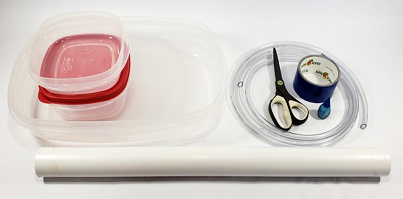
خلاصہ:
- فعال وقت
10-20 منٹ
- کل پروجیکٹ کا وقت
10-20 منٹ
- بنیادی خیال
کشش ثقل، زاویہ
تعارف:
آرکیمیڈیز سکرو ایک قدیم آلہ ہے جو پانی کو ایک جگہ سے دوسرے مقام تک اٹھانے کے لیے استعمال ہوتا ہے۔ وہ اتنے مفید ہیں کہ وہ آج بھی بڑے پیمانے پر استعمال میں ہیں! ہارڈویئر اسٹور کے فوری سفر کے بعد، آپ اس تفریحی سرگرمی میں اپنا آرکیمیڈیز اسکرو بنا سکتے ہیں۔
مواد:
- پی وی سی پائپ، کم از کم 1 انچ بیرونی قطر
- ونائل نلیاں صاف کریں، کم از کم 1/4 انچ اندرونی قطر
- ڈکٹ ٹیپ
- قینچی
- پانی کے لیے کنٹینر (2)
- کنٹینر میں سے ایک کو اونچا کرنے کے لیے کوئی چیز، جیسے ایک چھوٹا سا ڈبہ یا تیسرا کنٹینر
- اختیاری: کھانے کا رنگ
تیاری کا کام:
یہ سرگرمی کرتے وقت آپ تھوڑا سا پانی بہا سکتے ہیں۔ اس بات کو یقینی بنائیں کہ آپ اسے کسی ایسے علاقے میں کرتے ہیں جہاں صاف کرنا آسان ہو۔
طریقہ کار:
- ونائل ٹیوبنگ کے ایک سرے کو پی وی سی پائپ کے ایک سرے سے ڈکٹ ٹیپ سے جوڑیں۔
- پائپ کے گرد نلکی کو ایک سرپل میں مضبوطی سے لپیٹ دیں۔
- ڈکٹ ٹیپ کے ساتھ پائپ کے دوسرے سرے سے نلیاں جوڑیں۔
- کسی بھی اضافی نلکی کو کاٹنے کے لیے قینچی کا استعمال کریں۔
- اگر ضروری ہو تو، پائپ کی لمبائی کے ساتھ نلیاں کو یکساں طور پر باہر کرنے کے لیے ڈکٹ ٹیپ کے اضافی ٹکڑے استعمال کریں۔
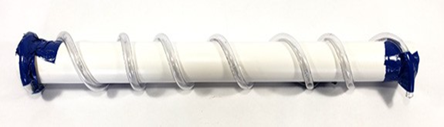
- ۔ اپنے ایک کنٹینر کو پانی سے بھریں۔ اگر آپ چاہیں تو پانی کو نلیاں میں ہونے کے وقت دیکھنے میں آسانی پیدا کرنے کے لیے فوڈ کلرنگ شامل کریں۔
- دوسرے (خالی) کنٹینر کو بلند کریں تاکہ یہ پہلے کنٹینر سے اونچا ہو۔
- اپنے آرکیمیڈیز سکرو کے ایک سرے کو پانی کے نچلے کنٹینر میں رکھیں، اور دوسرے سرے کو اوپری کنٹینر پر سیدھ کریں۔
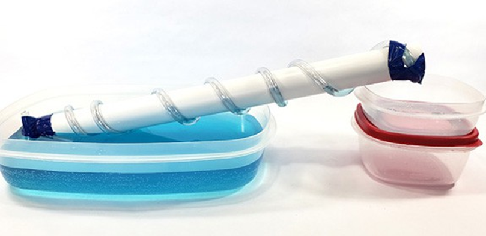
- اسکرو کو گھمائیں تاکہ ہر گھومنے کے ساتھ نلیاں کا نچلا حصہ پانی "اسکوپس" کرے۔ اسے پانی کے اندر جانا چاہیے اور پھر ہر انقلاب کے ساتھ سطح سے اوپر واپس آنا چاہیے، پورے وقت مکمل طور پر ڈوبا نہیں رہنا چاہیے۔ اگر آپ کو کچھ گھومنے کے بعد آپ کی نلیاں پانی سے بھرنا شروع نہیں ہوتی ہیں، تو ہو سکتا ہے کہ آپ سکرو کو غلط طریقے سے گھما رہے ہوں۔
- گھومتے رہیں اور دیکھتے رہیں جیسے پانی اونچے کنٹینر میں جاتا ہے!
- اپنے آرکیمیڈیز سکرو کے ساتھ تجربہ کریں۔ آپ کتنی اونچائی سے پانی اٹھا سکتے ہیں؟ اوپری کنٹینر کو اٹھائیں، اور اسکرو کو ایک تیز زاویہ پر اوپر کی طرف جھکائیں۔ کیا آپ اس مقام پر پہنچ گئے ہیں جہاں پانی اوپر کی بجائے نیچے کی طرف بہنا شروع ہو جائے؟
سرگرمی:
ڈسک سائرن بنائیں
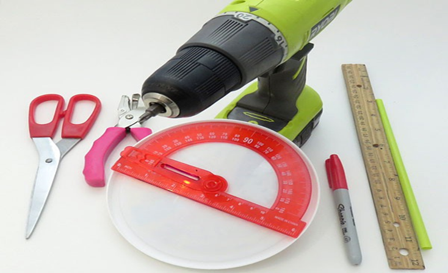
خلاصہ:
- فعال وقت
45 منٹ سے 1 گھنٹہ
- کل پروجیکٹ کا وقت
45 منٹ سے 1 گھنٹہ
- بنیادی خیال
آواز، سائرن، تعدد، پچ
تعارف:
اگر آپ شہری علاقے میں رہتے ہیں، تو شاید آپ انہیں تقریباً ہر روز سنتے ہیں: سائرن۔ پولیس کی کاریں، ایمبولینسیں، فائر ٹرکس—وہ سب کے سب آ سکتے ہیں۔ ان کے رونے کی آوازیں چھیدنے والی تیز ہوتی ہیں تاکہ دوسروں کو ان کے سامنے سے سڑک کو صاف کرنے میں مدد ملے۔ لیکن کیا آپ نے کبھی سوچا ہے کہ یہ تیز آواز کیسے پیدا ہوتی ہے؟ اس سرگرمی میں اپنی ڈسک سائرن بنائیں اور خود ہی معلوم کریں۔
مواد:
- پلاسٹک کا ڈھکن، وہ قسم جسے آپ دہی کے بڑے ٹبوں پر دیکھتے ہیں، ترجیحاً 16 سینٹی میٹر قطر۔
- قینچی
- پروٹریکٹر
- حکمران
- مستقل مارکر
- ڈبل رخا جھاگ ٹیپ، ایک چھوٹا سا ٹکڑا کافی ہے.
- ہول پنچ
- بے تار الیکٹرک ہائی پاور سکریو ڈرایور جو کم از کم 1,000 گردش فی منٹ تک پہنچتا ہے۔ آپ کو اسے صرف بالغ نگرانی کے ساتھ استعمال کرنا چاہئے۔
- سکریو ڈرایور کے لیے چھوٹا سا
- تنکے
- پیپر کلپ یا سوئی
- بالغ مددگار
تیاری کا کام:
- کنٹینر کا ڈھکن لیں اور سائیڈ رم کاٹ دیں۔ کنارے کو پھینک دو۔ پلاسٹک کا مرکز ڈسک کے طور پر استعمال ہوتا ہے۔
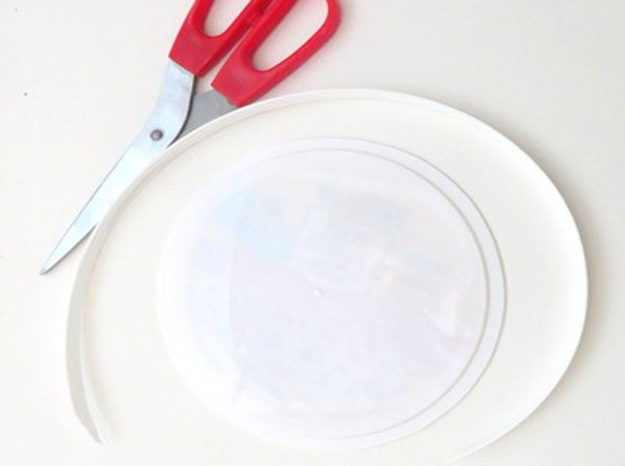
- مساوی 15 ڈگری وقفوں میں ڈسک کے بیچ میں لکیریں کھینچنے کے لیے پروٹیکٹر کا استعمال کریں۔
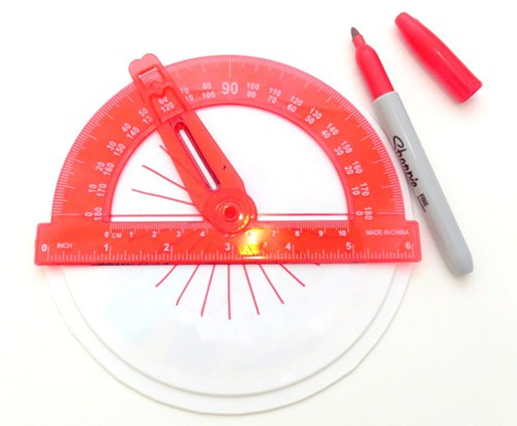
- لائنوں کو بڑھانے کے لیے ایک حکمران کا استعمال کریں تاکہ وہ تقریباً ڈسک کے اطراف تک پہنچ جائیں۔ لکیریں کھینچنے کے لیے دو رنگوں کے درمیان ردوبدل ضروری نہیں ہے لیکن اگلے مرحلے کو تھوڑا آسان بنا سکتا ہے۔
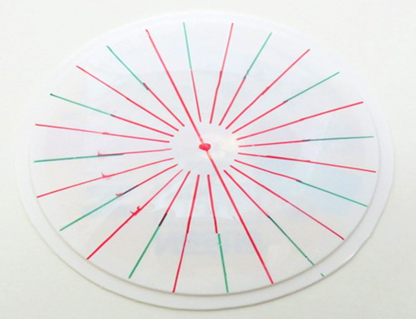
- کنارے سے 2 سینٹی میٹر کی لائنوں میں سے کسی ایک پر سوراخ کرنے کے لیے ہول پنچ کا استعمال کریں۔ اگر آپ کا ہول پنچ اس حد تک نہیں پہنچ سکتا ہے تو رم سے جتنا دور ہو سکے ایک سوراخ کو پنچ کریں۔ ڈسک پر کھینچی گئی ہر دوسری لائن پر ایسا کریں۔ اگر آپ لکیریں کھینچنے کے لیے متبادل رنگ استعمال کرتے ہیں تو یہ تمام سوراخ ایک ہی رنگ کی لکیروں پر ہوں گے۔
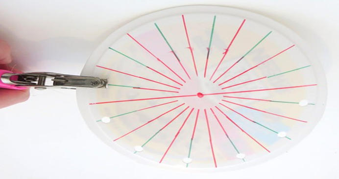
- ہر لائن پر اگلے پنچ سوراخ، کنارے سے تقریبا .5 سے 1 سینٹی میٹر.
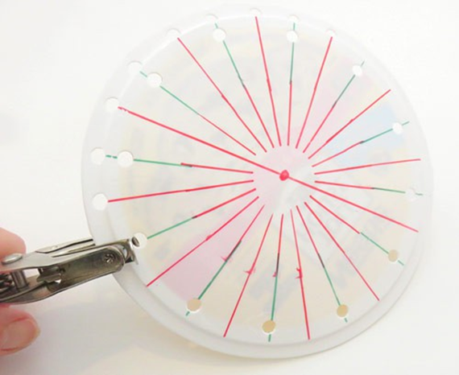
- اب آپ کے پاس ایک ڈسک ہے جس میں سوراخ کے دو مرتکز حلقے ہیں۔ بیرونی انگوٹھی میں اندرونی انگوٹھی سے دوگنا سوراخ ہوتے ہیں۔
- اختیاری: ڈسک کے ایک سائیڈ کو مستقل مارکر سے سجائیں۔ یہ سائیڈ سامنے کی طرف ہوگی۔
- اپنے کورڈ لیس سکریو ڈرایور میں تھوڑا سا ڈالیں۔
- دو طرفہ فوم ٹیپ کا ایک چھوٹا ٹکڑا کاٹ کر اسے ڈسک کے پچھلے حصے میں بیچ میں چپکا دیں۔ کاغذی کلپ یا سوئی سے ڈسک اور فوم ٹیپ کے بیچ میں ایک چھوٹا سا سوراخ کریں۔
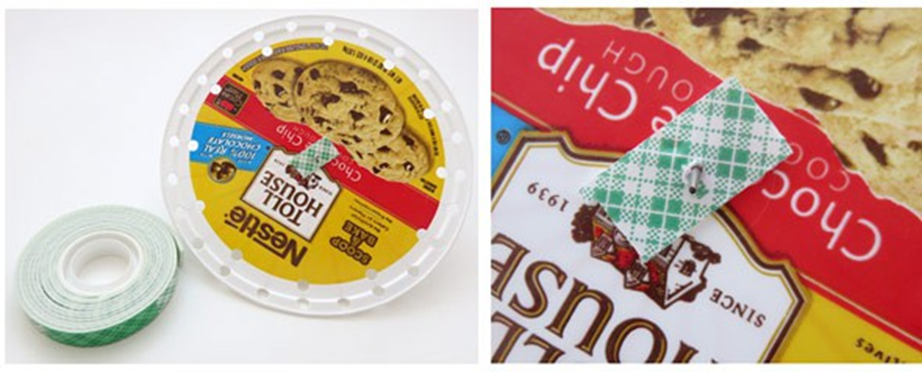
- دو طرفہ ٹیپ سے کاغذ کی پشت پناہی کو ہٹا دیں۔
- سوراخ شدہ ڈسک لیں اور بٹ کو چھوٹے مرکز کے سوراخ سے دبائیں تاکہ فوم ٹیپ کا رخ الیکٹرک سکریو ڈرایور کی طرف ہو۔ اگر یہ بہت مشکل ہے، تو آپ پہلے اس میں ایک تیز پنسل کی نوک کو دبا کر مرکزی سوراخ کو تھوڑا بڑا کر سکتے ہیں۔ سوراخ بہت بڑا نہ کریں۔ اگر آپ کو ڈسک کو بٹ پر لانے کے لیے سخت دھکیلنے کی ضرورت ہے، تو یہ مضبوطی سے بیٹھ جائے گی۔ فوم ٹیپ ڈسک کو بٹ پر قائم رکھنے میں بھی مدد کرتا ہے۔
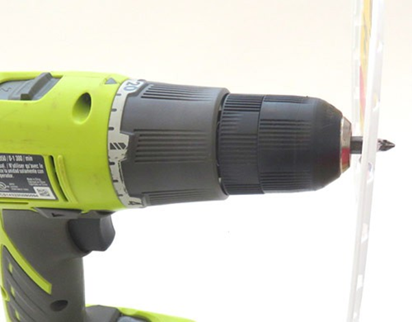
طریقہ کار:
- تنکے کو لیں اور اس میں پھونکتے وقت اپنا ہاتھ اس کے سامنے رکھیں۔
کیا آپ بھوسے سے بہتی ہوا محسوس کر سکتے ہیں؟ غور سے سنو. کیا ہوا کوئی آواز نکالتی ہے؟
- ۔ اپنے بالغ مددگار سے کہے کہ وہ کورڈ لیس الیکٹرک سکریو ڈرایور کو ڈسک کے ساتھ پکڑے۔
- اپنے بالغ مددگار کو سب سے کم سیٹنگ پر کورڈ لیس سکریو ڈرایور آن کرنے کو کہیں۔ اگر ڈسک نہیں گھومتی ہے تو آہستہ آہستہ اونچی ترتیب پر جائیں۔ اگر ڈسک اڑ جائے تو ڈسک کو بٹ سے زیادہ مضبوطی سے جوڑنے کے لیے رکیں اور مضبوط ڈبل رخا ٹیپ استعمال کریں۔ آپ ڈسک کو جگہ پر رکھنے میں مدد کے لیے بٹ کے آخر میں کارک یا صافی کو بھی دھکیل سکتے ہیں۔
- سکریو ڈرایور کی رفتار کے ساتھ تجربہ کرنے کے لیے، اپنے بالغ مددگار سے اسے آہستہ آہستہ آن کرنے کو کہیں۔ ڈسک کی رفتار پر توجہ دیں۔ معلوم کریں کہ آیا سکریو ڈرایور میں گردش کی رفتار کو تبدیل کرنے کی ترتیبات موجود ہیں۔
کیا ڈسک ہمیشہ ایک ہی گردشی رفتار سے گھومتی ہے؟ کیا آپ مختلف نرخوں پر ڈسک کو اسپن کر سکتے ہیں؟
- ڈسک کے گھومنے پر جو آواز آتی ہے اسے سنیں۔
کیا ڈسک کے گھومنے پر اس سے کوئی آواز آتی ہے؟ کیا آپ کورڈ لیس سکریو ڈرایور کے شور کے علاوہ کچھ سنتے ہیں؟
- اپنے بالغ مددگار کو دوبارہ کارڈلیس سکریو ڈرایور پر رکھیں اور ڈسک کو سب سے زیادہ ترتیب پر گھومتے رہیں۔ اس بات کو یقینی بنائیں کہ ڈسک کی گردش کی رفتار یکساں رہے۔ جب ڈسک گھوم رہی ہو، تنکے کو لیں اور اسے تقریباً ایک سے دو سینٹی میٹر (تقریباً ½ انچ) سوراخ کی بیرونی انگوٹھی کے سامنے، یا کھڑے ہو کر رکھیں تاکہ آپ سوراخوں میں ہوا اڑا سکیں۔ تنکے کے ذریعے اڑا دیں۔ اس بات کو یقینی بنائیں کہ آپ تنکے کو ڈسک کو چھونے نہیں دیتے ہیں۔
اس بار کیا ہوتا ہے؟ سنو۔ کیا آپ کا سائرن آواز دیتا ہے، اور اگر ہے، تو یہ کیوں آواز دیتا ہے؟ کیا آپ کو اونچی یا کم آواز سنائی دیتی ہے؟
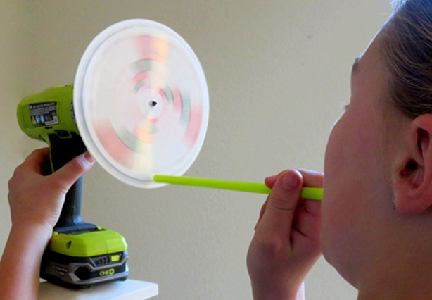
- ڈسک اب بھی اسی رفتار سے گھومنے کے ساتھ، اپنے بھوسے کو اس طرح منتقل کریں کہ یہ سوراخوں کے اندرونی دائرے کے مطابق ہو اور تنکے کے ذریعے ہوا اڑا دیں۔
کیا آپ آواز سن سکتے ہیں؟ کیا لہجہ پچھلے سے مختلف ہے؟ آپ کے خیال میں آواز مختلف کیوں ہے؟
- اگر آپ کو آواز نہیں آتی ہے، تو یقینی بنائیں کہ سکریو ڈرایور سب سے زیادہ سیٹنگ پر ہے اور بیٹری پوری طرح سے چارج ہے۔ آپ چاہتے ہیں کہ آپ کی ڈسک 1,000 گردش یا اس سے زیادہ فی منٹ کی شرح سے گھومے۔ اگر آپ نے ڈسک کو سجایا ہے، تو کتائی کرتے وقت سجاوٹ کو ایک ساتھ دھندلا ہونا چاہیے۔ اگر انفرادی ٹکڑے اب بھی نظر آ رہے ہیں، تو ڈسک اتنی تیزی سے نہیں گھوم رہی ہے۔
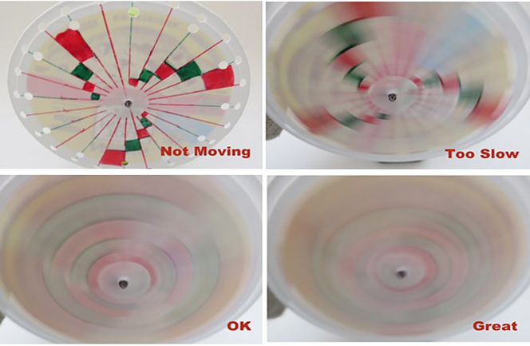
- دوبارہ تنکے کو لیں اور ڈسک پر سوراخوں کی بیرونی انگوٹھی کے خلاف اڑا دیں۔ اڑانے کے دوران، کورڈ لیس سکریو ڈرایور کی رفتار کو مسلسل تبدیل کریں تاکہ ڈسک مختلف شرحوں پر گھومے۔
گھومنے کی رفتار تبدیل ہونے پر سائرن کی آواز کا کیا ہوتا ہے؟ کم رفتار والے ٹون کے مقابلے میں تیز رفتار ترتیب کے ساتھ ٹون کی آواز کیسے آتی ہے؟ کیا آپ اپنے مشاہدات کی وضاحت کر سکتے ہیں؟
- سوراخ کے دو حلقوں پر اڑانے کے ساتھ تجربہ کریں جب کہ ڈرل مختلف گردشی رفتار سے گھومتی ہے۔
کیا آپ ایک حقیقت پسندانہ رونے والی سائرن آواز بنا سکتے ہیں؟
سرگرمی:
ایک آئن ونڈ روٹر بنائیں
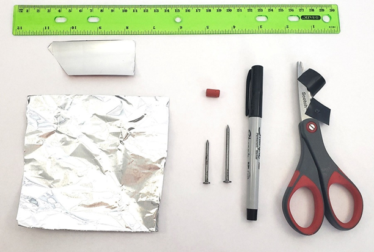
خلاصہ:
- فعال وقت
20-30 منٹ
- کل پروجیکٹ کا وقت
20-30 منٹ
- بنیادی خیال
الیکٹرک چارج، فورسز
تعارف:
کیا آپ کسی چیز کو حرکت دینے کے لیے برقی چارج شدہ "ہوا" استعمال کر سکتے ہیں؟ اس تفریحی منصوبے میں تلاش کریں جب آپ اپنا آئن ونڈ روٹر بناتے ہیں۔
مواد:
- ایلومینیم فوائل یا ایلومینیم کا ٹکڑا مشروبات کے ڈبے سے کاٹا جاتا ہے۔
- قدرے مختلف قطر کے دو ناخن
- پنسل صاف کرنے والا
- فائن پوائنٹ مارکر
- قینچی
- حکمران
- الیکٹریکل ٹیپ
- وان ڈی گراف جنریٹر تک رسائی
تیاری کا کام:
- یقینی بنائیں کہ آپ وان ڈی گراف جنریٹر کے لیے ہدایات کو پڑھتے ہیں اور اسے چلاتے وقت تمام حفاظتی اقدامات پر عمل کرتے ہیں۔
- اگر آپ ایلومینیم مشروب کا ڈبہ استعمال کر رہے ہیں، تو کسی بالغ سے مدد لیں کہ آپ سائیڈ سے فلیٹ ٹکڑا کاٹ دیں۔ ہوشیار رہو کیونکہ اس کے نتیجے میں دھار تیز ہو سکتے ہیں۔
طریقہ کار:
- ایلومینیم کے ٹکڑے پر اپنے روٹر کے لیے خاکہ بنانے کے لیے حکمران اور مارکر کا استعمال کریں۔ روٹر کے صحیح سائز اور شکل میں اس وقت تک کوئی فرق نہیں پڑتا جب تک کہ یہ ہم آہنگ ہو۔ یہ لمبا اور پتلا ہونا چاہئے جس کے ہر سرے پر دو مثلثی اشارے مخالف سمتوں کی طرف اشارہ کرتے ہیں۔ اس بات کو یقینی بنائیں کہ روٹر بلیڈ کے پچھلے کنارے (ٹپس کے مخالف) گول ہیں، نوکیلے نہیں ہیں۔ روٹر کے عین مطابق مرکز کو احتیاط سے نشان زد کریں۔
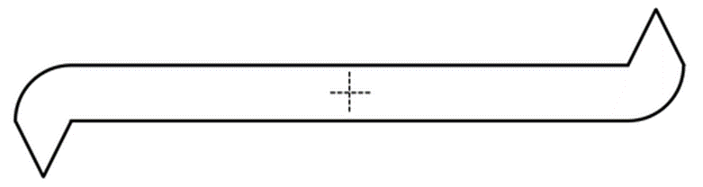
- روٹر کے بالکل بیچ میں سوراخ کرنے کے لیے بڑے کیل کا استعمال کریں۔ اگر آپ کو یہ مشکل لگتا ہے تو، کیل کو ٹھونستے وقت روٹر کے پیچھے سکریپ گتے کا ایک ٹکڑا رکھیں۔
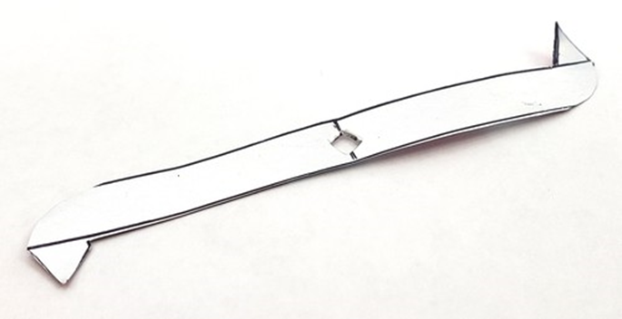
- روٹر کو پلٹائیں، اور کیل کے سر کو کسی بھی تیز کناروں کو چپٹا کرنے کے لیے استعمال کریں جو سوراخ کے گرد باہر نکل رہا ہو۔
- برقی ٹیپ کے دو چھوٹے ٹکڑے کاٹ لیں۔
- چھوٹے کیل کو ٹیپ کے ایک ٹکڑے کے بیچ میں کیل کے سر کی طرف چپکنے والی طرف کے ساتھ گھسیٹیں۔ ٹیپ کے ٹکڑے کو پوری طرح نیچے کیل کے سر تک سلائیڈ کریں۔
- . ٹیپ کے دوسرے ٹکڑے کو کیل کی بنیاد کے گرد کئی بار لپیٹیں۔
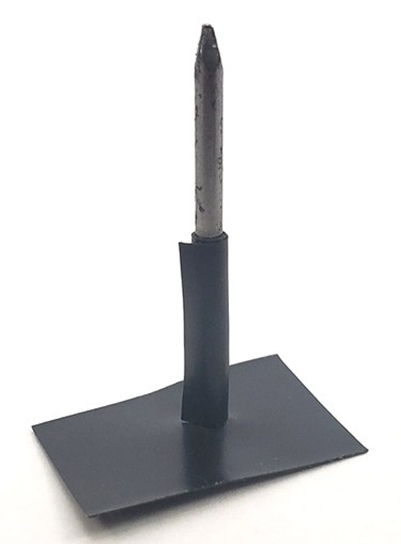
- روٹر کو کیل پر سلائیڈ کریں۔
- پنسل صافی کو کیل کے اوپری حصے پر دبائیں۔ یہ روٹر کو اڑنے سے روکے گا۔
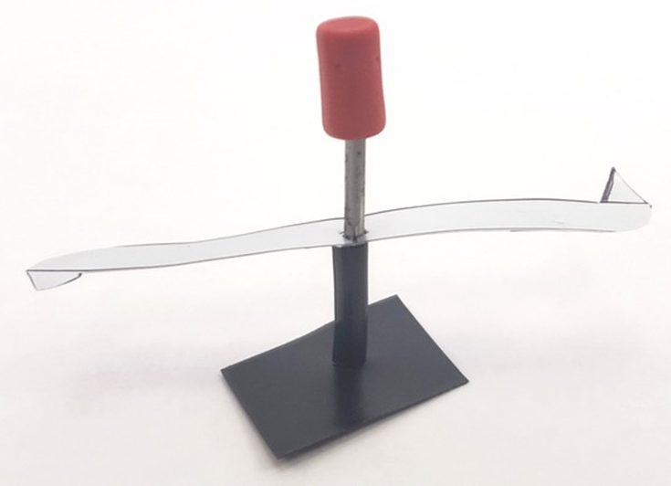
- اس بات کو یقینی بنائیں کہ روٹر بغیر پھنسے آزادانہ طور پر گھوم سکتا ہے۔ اگر یہ پھنس جائے تو روٹر کو ہٹا دیں اور سوراخ کو چوڑا کرنے اور کسی کھردرے کناروں کو چپٹا کرنے کے لیے بڑے کیل کا استعمال کریں۔ اس عمل کو اس وقت تک دہرائیں جب تک کہ روٹر چھوٹے کیل پر آزادانہ طور پر نہ گھمے۔
- وین ڈی گراف جنریٹر کے اوپر کیل کو عمودی طور پر ٹیپ کریں۔ یقینی بنائیں کہ مضبوطی سے نیچے دبائیں، تاکہ کیل گنبد کے ساتھ برقی رابطے میں ہو۔
آپ کے خیال میں جب آپ وین ڈی گراف جنریٹر کو آن کریں گے تو کیا ہوگا؟
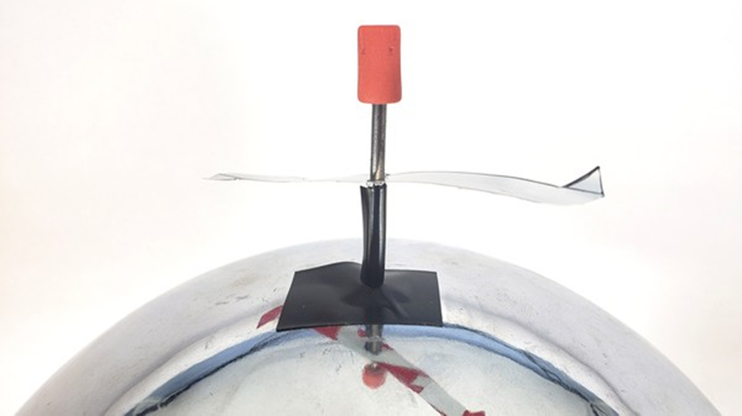
- وین ڈی گراف جنریٹر کو آن کریں اور اپنے روٹر کو قریب سے دیکھیں۔ کیا آپ کی پیشین گوئی درست تھی؟